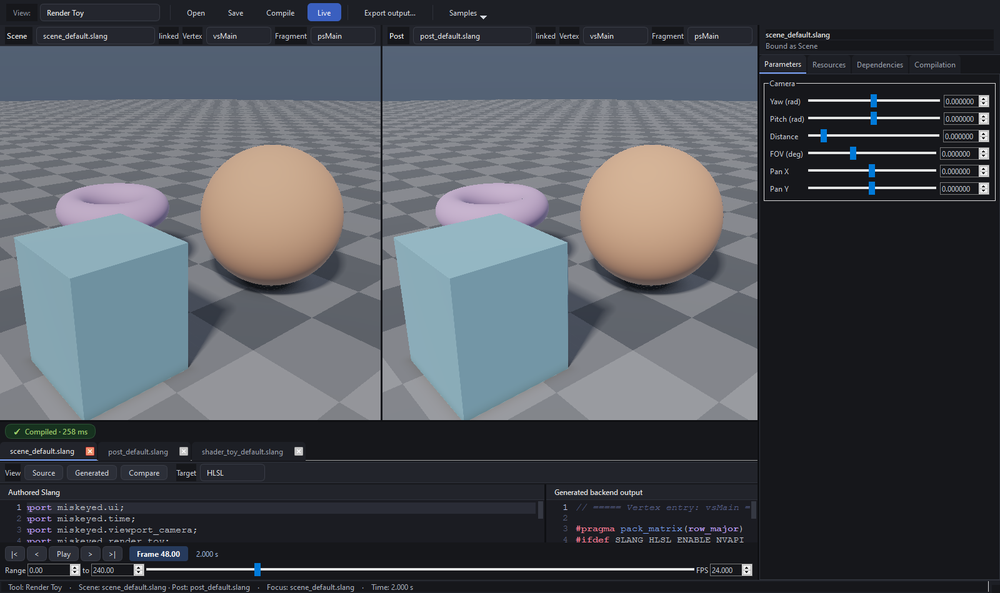

Miskeyed Workbench¶
Workbench is a native Qt 6.8 application for learning and authoring live Slang programs. It deliberately separates authored documents, tool runtime bindings, compiler products, evaluation time, and QRhi execution. The result is useful both as a shader tool and as a compact example of production-oriented DCC architecture.
This site teaches those boundaries rather than listing every public method. Start with Getting started, then follow the architecture chapters before reading the Slang and rendering sections.
You are reading the Workbench 0.3.0 documentation.

The application images on this site are generated by the native Windows capture job as part of the deployment artifact. Binary captures are not stored in the source repository.
Learning path¶
Getting started
Architecture
Slang
Rendering